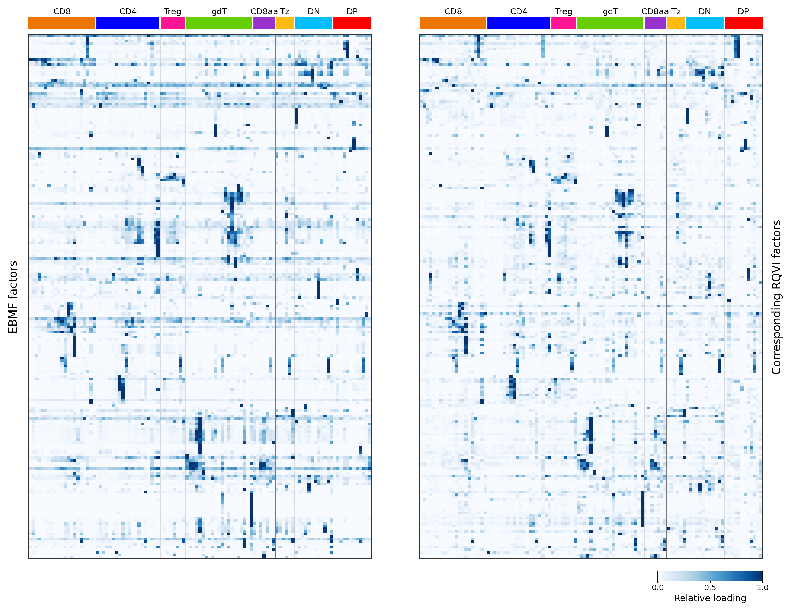

Last updated: 2026-07-23
Checks: 7 0
Knit directory:
immgenT-GP-analysis/analysis/
This reproducible R Markdown analysis was created with workflowr (version 1.7.2). The Checks tab describes the reproducibility checks that were applied when the results were created. The Past versions tab lists the development history.
Great! Since the R Markdown file has been committed to the Git repository, you know the exact version of the code that produced these results.
Great job! The global environment was empty. Objects defined in the global environment can affect the analysis in your R Markdown file in unknown ways. For reproduciblity it’s best to always run the code in an empty environment.
The command set.seed(1) was run prior to running the
code in the R Markdown file. Setting a seed ensures that any results
that rely on randomness, e.g. subsampling or permutations, are
reproducible.
Great job! Recording the operating system, R version, and package versions is critical for reproducibility.
Nice! There were no cached chunks for this analysis, so you can be confident that you successfully produced the results during this run.
Great job! Using relative paths to the files within your workflowr project makes it easier to run your code on other machines.
Great! You are using Git for version control. Tracking code development and connecting the code version to the results is critical for reproducibility.
The results in this page were generated with repository version b9f4f58. See the Past versions tab to see a history of the changes made to the R Markdown and HTML files.
Note that you need to be careful to ensure that all relevant files for
the analysis have been committed to Git prior to generating the results
(you can use wflow_publish or
wflow_git_commit). workflowr only checks the R Markdown
file, but you know if there are other scripts or data files that it
depends on. Below is the status of the Git repository when the results
were generated:
Ignored files:
Ignored: .DS_Store
Ignored: .claude/
Ignored: analysis/.DS_Store
Ignored: analysis/.Rhistory
Ignored: analysis/assets/.DS_Store
Ignored: code/.DS_Store
Ignored: data
Ignored: experiments/.DS_Store
Ignored: figures/.DS_Store
Ignored: figures/final-selected/.DS_Store
Ignored: figures/final-selected/bits/.DS_Store
Ignored: figures/final-selected/bits/Figure 1/.DS_Store
Ignored: figures/final-selected/bits/Figure 2/.DS_Store
Ignored: figures/final-selected/bits/Figure 3/.DS_Store
Ignored: figures/final-selected/bits/Figure 4/.DS_Store
Ignored: figures/final-selected/bits/Figure 6/.DS_Store
Ignored: figures/final-selected/bits/Figure 7/.DS_Store
Ignored: figures/final-selected/bits/Figure S1/.DS_Store
Ignored: figures/final-selected/bits/Figure S2/.DS_Store
Ignored: figures/final-selected/bits/Figure S3/.DS_Store
Ignored: figures/final-selected/bits/Figure S6/.DS_Store
Ignored: figures/final-selected/bits/Figure S7/.DS_Store
Ignored: figures/generated/.DS_Store
Ignored: figures/generated/Figure 1/.DS_Store
Ignored: figures/generated/Figure 2/.DS_Store
Ignored: tmp/
Untracked files:
Untracked: code/other/topic_flashier_20250212.R
Untracked: code/other/topic_wrapper_20250215_alldata_backfit.sh
Untracked: experiments/active_metric_comparison/
Untracked: experiments/figure6b_sparsity_ordered/
Untracked: experiments/gene_umap_gp_space/
Untracked: experiments/protein_threshold_gp_loading_diff/
Untracked: experiments/surface_protein_activation_scatter/
Untracked: figures/generated/Figure 1/1B.pdf
Untracked: figures/generated/Figure 3/3A.pdf
Untracked: figures/generated/Figure 3/3B.pdf
Untracked: figures/generated/Figure 3/3H.pdf
Untracked: figures/generated/Figure 3/3I.pdf
Untracked: figures/generated/Figure 3/3J.pdf
Untracked: figures/generated/Figure 3/3K.pdf
Untracked: figures/generated/Figure 3/3L.pdf
Untracked: figures/generated/Figure 3/3M.pdf
Untracked: figures/generated/Figure 4/4f.pdf
Untracked: figures/generated/Figure 4/4g.pdf
Untracked: figures/generated/Figure 5/
Untracked: figures/generated/Figure 6/6a.pdf
Untracked: figures/generated/Figure 7/
Untracked: log/2026-07-13-surface-protein-activation-scatter.md
Untracked: log/2026-07-15-protein-threshold-gp-loading-diff-tables.md
Untracked: plan/2026-07-13-active-cell-gene-metrics-exploration.md
Untracked: plan/2026-07-13-surface-protein-activation-scatter.md
Untracked: plan/2026-07-13_figure6b_triangular_order_plan.md
Untracked: plan/2026-07-13_figure6b_wide_gp_columns_formal_plan.md
Untracked: plan/2026-07-14_figure6b_heatmap_typography_plan.md
Untracked: plan/2026-07-15-protein-threshold-gp-loading-diff-tables.md
Untracked: tables/
Unstaged changes:
Modified: analysis/Methods_FlashierFit.Rmd
Modified: figures/generated/Figure 1/1A.pdf
Modified: figures/generated/Figure 1/1C.pdf
Modified: figures/generated/Figure 1/1D.pdf
Deleted: figures/generated/Figure 1/1E.pdf
Deleted: figures/generated/Figure 1/1F.pdf
Deleted: figures/generated/Figure 1/1G.pdf
Deleted: figures/generated/Figure 1/1H.pdf
Deleted: figures/generated/Figure 1/1I.pdf
Deleted: figures/generated/Figure 1/hist_active_cells_per_GP.pdf
Deleted: figures/generated/Figure 1/hist_active_genes_prop_per_GP.pdf
Deleted: figures/generated/Figure 1/scatter_e_active_cells_vs_genes.pdf
Modified: figures/generated/Figure 2/2A.pdf
Modified: figures/generated/Figure 2/2B.pdf
Modified: figures/generated/Figure 2/2C.pdf
Modified: figures/generated/Figure 2/2D.pdf
Modified: figures/generated/Figure 2/2E.pdf
Modified: figures/generated/Figure 2/2F.pdf
Deleted: figures/generated/Figure 2/2G.pdf
Deleted: figures/generated/Figure 2/2H.pdf
Deleted: figures/generated/Figure 2/2I.pdf
Deleted: figures/generated/Figure 2/2J.pdf
Deleted: figures/generated/Figure 2/2K.pdf
Deleted: figures/generated/Figure 2/2L.pdf
Deleted: figures/generated/Figure 2/2M.pdf
Modified: figures/generated/Figure 3/3c.pdf
Modified: figures/generated/Figure 3/3d.pdf
Modified: figures/generated/Figure 3/3e.pdf
Modified: figures/generated/Figure 3/3f.pdf
Modified: figures/generated/Figure 3/3g.pdf
Deleted: figures/generated/Figure 4/4a.pdf
Deleted: figures/generated/Figure 4/4b.pdf
Modified: figures/generated/Figure 4/4c.pdf
Modified: figures/generated/Figure 4/4d.pdf
Modified: figures/generated/Figure 4/4e.pdf
Modified: figures/generated/Figure S1/S1A.pdf
Modified: figures/generated/Figure S1/S1B.pdf
Modified: figures/generated/Figure S1/S1C.pdf
Modified: figures/generated/Figure S1/S1D.pdf
Modified: figures/generated/Figure S1/S1E.pdf
Modified: figures/generated/Figure S3/s3c.pdf
Modified: figures/generated/Figure S3/s3d.pdf
Modified: figures/generated/Figure S3/s3e.pdf
Modified: figures/generated/Figure S3/s3f.pdf
Modified: figures/generated/Figure S3/s3g.pdf
Modified: figures/generated/Figure S3/s3h.pdf
Note that any generated files, e.g. HTML, png, CSS, etc., are not included in this status report because it is ok for generated content to have uncommitted changes.
These are the previous versions of the repository in which changes were
made to the R Markdown (analysis/FigureS5.Rmd) and HTML
(docs/FigureS5.html) files. If you’ve configured a remote
Git repository (see ?wflow_git_remote), click on the
hyperlinks in the table below to view the files as they were in that
past version.
| File | Version | Author | Date | Message |
|---|---|---|---|---|
| Rmd | b9f4f58 | Ziang Zhang | 2026-07-23 | Add Figure S5: EBMF vs matched-RQVI level2-cluster comparison |
Figure S5 compares the cluster-level activity patterns of the 200
EBMF gene programs (our flashier fit) with 200 corresponding RQVI
programs contributed by our collaborator (Tianze, TianzeCompbio/RQVI_GP_figures).
The two heatmaps share the same row order and the same level2-cluster
columns, so matching biological patterns can be read directly from left
to right. The visual style follows the collaborator’s figure: two
white-to-blue Blues heatmaps, per-factor relative loading
on [0, 1], broad lineage annotations above the columns, no
factor identifiers, and a single shared colorbar.
Design. Cells are our L_pm_filtered
cells (those that passed the iterative total-loading filter), restricted
to non-thymocytes (annotation_level1 != "thymocyte", all
conditions), intersected with the cells that carry RQVI loadings. EBMF
cluster means use our flashier loadings; RQVI cluster means use the
collaborator’s raw cell-level RQVI loadings. Both are averaged within
annotation_level2 on the same common cells. Each RQVI
program is placed on the row of its paired EBMF factor; the pairing is a
one-to-one assignment re-derived on our clustering (see below). The
collaborator’s EBMF factor F_k was verified to equal our
flashier GP_k at the cell level (Pearson r = 1.0 for all
200).
Three steps, run from the repository root (script/):
# 1. cluster-mean matrices + column/palette metadata (uses our L_pm_filtered)
Rscript script/FigureS5.R
# 2. re-derive the one-to-one EBMF<->RQVI matching on our basis
python script/FigureS5_rematch.py
# 3. draw the Tianze-style heatmaps
python script/FigureS5_plot.pyThe Python steps use an environment with matplotlib,
pandas, scipy, h5py, and
numpy. The collaborator’s cell-level loading package
(data/rqvi_loading/RQVI_EBMF_heatmap_data_v1/) provides the
RQVI and EBMF cell-level loadings; data/ is a git-ignored
symlink and is not tracked here.
script/FigureS5.R builds the raw
annotation_level2 cluster-mean matrices for the EBMF
factors and the matched RQVI programs on the common non-thymocyte cells,
plus the column order (Figure-1 level1 lineage order, alphabetical
within lineage) and the lineage color palette.
# Figure S5 (data step). EBMF vs matched-RQVI level2-cluster comparison.
#
# Design (version B, Tianze-style plotting done in script/FigureS5_plot.py):
# * Cells: OUR L_pm_filtered cells (passed the iterative total-loading filter),
# restricted to non-thymocytes (annotation_level1 != "thymocyte"), ALL
# conditions (no healthy-only restriction), intersected with the cells that
# have RQVI loadings -> "common cells".
# * EBMF matrix: our flashier loadings L_pm_filtered (GP1..GP200), averaged
# within annotation_level2 on the common cells.
# * RQVI matrix: Tianze's 200 matched RQVI programs (raw cell loadings),
# averaged within annotation_level2 on the SAME common cells. Each matched
# program is placed under the column of its paired EBMF factor. The pairing
# is Tianze's one-to-one match table; F_k == our GP_k (verified at cell level,
# cell-level Pearson r = 1.0 for all 200).
# * Columns (level2 clusters) are ordered by the Figure-1 level1 lineage order
# and alphabetically within each lineage.
#
# This script writes raw cluster-mean matrices + column/palette metadata.
# Row ordering (hierarchical clustering of EBMF), per-factor 0-1 scaling, and
# the heatmaps are produced by script/FigureS5_plot.py in Tianze's visual style.
suppressPackageStartupMessages({
library(arrow)
library(data.table)
library(ZemmourLib)
})
if (!file.exists("code/R/setup_data.R")) {
stop("Run this script from the immgenT-GP-analysis repository root.")
}
source("code/R/setup_data.R")
outdir <- "figures/generated/Figure S5"
dir.create(outdir, recursive = TRUE, showWarnings = FALSE)
PKG <- "data/rqvi_loading/RQVI_EBMF_heatmap_data_v1/data"
parquet_path <- file.path(PKG, "rqvi_matched_200_cell_loadings.parquet")
matches_path <- file.path(PKG, "ebmf_rqvi_multiseed_level2_one_to_one_matches.csv")
level1_order <- c("CD8", "CD4", "Treg", "gdT", "CD8aa", "Tz", "DN", "DP")
## ---- our EBMF loadings + metadata ----
gp <- load_gp_data()
L <- gp$L_pm_filtered
colnames(L) <- paste0("GP", seq_len(ncol(L)))
meta <- gp$seurat_meta_filtered
stopifnot(identical(rownames(L), rownames(meta)), ncol(L) == 200L)
nonthy <- meta$annotation_level1 != "thymocyte"
if (anyNA(nonthy)) stop("annotation_level1 has missing values.")
## ---- matched RQVI cell loadings (200 programs) ----
pq <- as.data.frame(arrow::read_parquet(parquet_path))
prog <- setdiff(colnames(pq), "cell_id")
stopifnot(length(prog) == 200L)
matches <- fread(matches_path)
f_for <- matches$ebmf_factor[match(prog, matches$rqvi_candidate)] # "F<k>" per program
if (anyNA(f_for) || length(unique(f_for)) != 200L) {
stop("Could not map every RQVI program column to a unique EBMF factor.")
}
## ---- common cells (non-thymocyte, in L_pm, and with RQVI loading) ----
our_nonthy_ids <- rownames(L)[nonthy]
common_ids <- our_nonthy_ids[our_nonthy_ids %in% pq$cell_id]
grp <- factor(as.character(meta$annotation_level2[match(common_ids, rownames(meta))]))
grp <- droplevels(grp)
if (anyNA(grp) || any(as.character(grp) == "")) stop("Missing level2 labels on common cells.")
message(sprintf("common non-thymocyte cells: %d (healthy %d / non-healthy %d); level2 clusters: %d",
length(common_ids),
sum(meta$condition_broad[match(common_ids, rownames(meta))] == "healthy"),
sum(meta$condition_broad[match(common_ids, rownames(meta))] != "healthy"),
nlevels(grp)))
## ---- EBMF cluster means (columns F1..F200) ----
Lc <- L[common_ids, , drop = FALSE]
colnames(Lc) <- paste0("F", seq_len(ncol(Lc)))
esum <- rowsum(Lc, grp)
ecnt <- as.integer(table(grp)[rownames(esum)])
ebmf_means <- sweep(esum, 1L, ecnt, "/") # K x 200
## ---- matched-RQVI cluster means (columns F1..F200, same pairing) ----
pqc <- as.matrix(pq[match(common_ids, pq$cell_id), prog, drop = FALSE])
colnames(pqc) <- f_for
pqc <- pqc[, paste0("F", seq_len(200)), drop = FALSE] # reorder to F1..F200
rsum <- rowsum(pqc, grp)
rcnt <- as.integer(table(grp)[rownames(rsum)])
rqvi_means <- sweep(rsum, 1L, rcnt, "/")
stopifnot(identical(rownames(ebmf_means), rownames(rqvi_means)),
identical(ecnt, rcnt), # same cells -> same counts
nrow(ebmf_means) == 107L, ncol(ebmf_means) == 200L)
## ---- level2 column order (Figure-1 level1 order, alphabetical within) ----
l2 <- rownames(ebmf_means)
lmap <- unique(data.frame(level2 = as.character(meta$annotation_level2),
level1 = as.character(meta$annotation_level1),
stringsAsFactors = FALSE))
if (anyDuplicated(lmap$level2)) stop("A level2 label maps to multiple level1 labels.")
lin <- lmap$level1[match(l2, lmap$level2)]
if (anyNA(lin) || !all(lin %in% level1_order)) stop("Unexpected level1 lineage among clusters.")
ord <- order(match(lin, level1_order), l2)
cluster_order <- data.frame(
level2_cluster = l2[ord],
level1 = lin[ord],
display_column = seq_along(ord) - 1L,
n_cells = ecnt[ord],
stringsAsFactors = FALSE
)
## ---- level1 palette (our canonical colors) as hex ----
l1pal <- ZemmourLib::immgent_colors$level1
hex <- vapply(l1pal, function(cc) {
v <- grDevices::col2rgb(cc)
grDevices::rgb(v[1], v[2], v[3], maxColorValue = 255)
}, character(1))
pal_df <- data.frame(level1 = names(hex), color = unname(hex), stringsAsFactors = FALSE)
## ---- write outputs ----
fwrite(data.frame(level2_cluster = rownames(ebmf_means), ebmf_means, check.names = FALSE),
file.path(outdir, "S5_ebmf_raw_means_level2.csv"))
fwrite(data.frame(level2_cluster = rownames(rqvi_means), rqvi_means, check.names = FALSE),
file.path(outdir, "S5_rqvi_matched_raw_means_level2.csv"))
fwrite(cluster_order, file.path(outdir, "S5_cluster_order.csv"))
fwrite(pal_df, file.path(outdir, "S5_level1_palette.csv"))
fwrite(data.frame(
metric = c("common_cells", "healthy_cells", "nonhealthy_cells", "level2_clusters",
"ebmf_factors", "rqvi_matched_programs"),
value = c(length(common_ids),
sum(meta$condition_broad[match(common_ids, rownames(meta))] == "healthy"),
sum(meta$condition_broad[match(common_ids, rownames(meta))] != "healthy"),
nlevels(grp), 200L, 200L)
), file.path(outdir, "S5_build_summary.csv"))
message("Wrote Fig S5 data inputs to ", normalizePath(outdir))The matching is the collaborator’s method applied unchanged to our
re-aligned data. Each factor’s mean-loading profile is z-scored across
clusters; the signed Pearson correlation between every EBMF factor and
every one of the 2,560 seed-specific RQVI candidates (10 seeds x 256
programs) is EBMF_z^T @ RQVI_z / K; candidates with a
constant profile are excluded; and a maximum-weight one-to-one
assignment (scipy.optimize.linear_sum_assignment) pairs
each EBMF factor with a distinct RQVI candidate so that the total signed
correlation is maximized. Only the inputs differ from the collaborator’s
run: our updated annotation_level2 clustering and our
common cell set. The matching uses all common cells
(L_pm_filtered intersect RQVI, 108 level2 clusters
including the thymocyte cluster); the figure displays the 107
non-thymocyte clusters.
"""Figure S5 rematch step. Re-derive the one-to-one EBMF<->RQVI matching on OUR
basis using Tianze's exact method, then aggregate the matched RQVI programs onto
the display clusters.
Matching basis: ALL common cells = our L_pm_filtered cells that also have RQVI
loadings, WITHOUT a non-thymocyte filter (aligns the two loading matrices
directly). Clusters = our annotation_level2 (108, including the thymocyte
cluster). This is the user-preferred alignment; vs a non-thymocyte-only matching
it changes only ~5/200 pairs and leaves the display-cluster correlation identical.
Display basis: non-thymocyte cells only, our annotation_level2 (107 clusters) --
this is what Figure S5 shows.
Method (identical to Tianze's fig_ebmf_rqvi_level2_comparison.py --recompute-matches):
1. z-score every factor's mean-loading profile across clusters,
2. signed Pearson r = EBMF_z^T @ RQVI_z / n_clusters,
3. drop constant-profile RQVI candidates,
4. maximum-weight one-to-one assignment via scipy linear_sum_assignment.
We only re-apply this method to the re-aligned data; the algorithm is unchanged.
EBMF loadings are read from Tianze's ebmf_cell_loadings.h5ad, which was verified
cell-for-cell identical to our L_pm_filtered (F_k == GP_k, cell-level r = 1.0).
Run: <miniforge>/envs/pyenv/bin/python script/FigureS5_rematch.py
"""
from __future__ import annotations
import csv
from pathlib import Path
import h5py
import numpy as np
import pandas as pd
import scipy.sparse as sp
from scipy.optimize import linear_sum_assignment
FIG_DIR = Path("figures/generated/Figure S5")
PKG = Path("data/rqvi_loading/RQVI_EBMF_heatmap_data_v1/data")
EBMF_H5AD = PKG / "ebmf_cell_loadings.h5ad"
ALL_H5AD = PKG / "rqvi_all_10seeds_cell_loadings.h5ad"
OUR_CELLS = Path("/private/tmp/claude-501/-Users-ziangzhang-Desktop-Immgen-immgenT-GP-analysis/"
"c8df43b6-c668-4f73-8b74-79373075c6fe/scratchpad/our_cells.csv")
FACTORS = [f"F{k}" for k in range(1, 201)]
def _h5_index(f, group):
g = f[group]
key = g.attrs.get("_index", "_index")
if isinstance(key, bytes):
key = key.decode()
return np.array([v.decode() if isinstance(v, (bytes, bytearray)) else str(v) for v in g[key][:]])
def _zscore(M):
m = M - M.mean(0, keepdims=True)
s = M.std(0, ddof=0, keepdims=True)
info = s.ravel() > np.finfo(float).eps
z = np.zeros_like(M)
z[:, info] = m[:, info] / s[:, info]
return z, info
def _cluster_means(mat, codes, n_clusters):
"""mat: (n_cells x n_features) dense ndarray or scipy sparse; returns (K x n_features)."""
counts = np.bincount(codes, minlength=n_clusters).astype(np.float64)
ind = sp.csr_matrix((np.ones(codes.size), (codes, np.arange(codes.size))),
shape=(n_clusters, codes.size))
prod = ind @ mat
if sp.issparse(prod):
prod = np.asarray(prod.todense())
return np.asarray(prod, dtype=np.float64) / counts[:, None], counts
def main() -> None:
# our L_pm_filtered cells -> annotation (no filtering yet)
cell_l1, cell_l2 = {}, {}
with open(OUR_CELLS) as fh:
for row in csv.DictReader(fh):
cell_l1[row["cellID"]] = row["annotation_level1"]
cell_l2[row["cellID"]] = row["annotation_level2"]
# EBMF (F1..F200, dense) and RQVI all-2560 (sparse), same cell order
fe = h5py.File(EBMF_H5AD, "r")
obs = _h5_index(fe, "obs")
e_var = _h5_index(fe, "var")
e_pos = {n: i for i, n in enumerate(e_var)}
E = fe["X"][:][:, [e_pos[c] for c in FACTORS]] # n_obs x 200
fe.close()
fr = h5py.File(ALL_H5AD, "r")
r_obs = _h5_index(fr, "obs")
r_var = _h5_index(fr, "var")
g = fr["X"]
R = sp.csr_matrix((g["data"][:], g["indices"][:], g["indptr"][:]), shape=tuple(g.attrs["shape"]))
fr.close()
if not np.array_equal(obs, r_obs):
raise ValueError("EBMF and RQVI cell orders differ")
# ---- MATCHING basis: all common cells (no non-thymocyte filter) ----
m_mask = np.array([c in cell_l2 for c in obs])
m_idx = np.where(m_mask)[0]
m_labs = np.array([cell_l2[obs[i]] for i in m_idx])
m_clusters = sorted(set(m_labs))
m_code = {l: i for i, l in enumerate(m_clusters)}
m_codes = np.array([m_code[l] for l in m_labs])
K_match = len(m_clusters)
ebmf_m, _ = _cluster_means(E[m_idx], m_codes, K_match) # K_match x 200
rqvi_m, _ = _cluster_means(R[m_idx], m_codes, K_match) # K_match x 2560
ez, e_info = _zscore(ebmf_m)
rz, r_info = _zscore(rqvi_m)
if not e_info.all():
raise ValueError("constant EBMF factor on matching basis")
corr = ez.T @ rz / K_match
corr[:, ~r_info] = -np.inf
cost = np.where(np.isfinite(corr), corr, -1e9)
rows, cols = linear_sum_assignment(-cost)
if rows.size != 200 or np.unique(cols).size != 200:
raise RuntimeError("assignment did not cover all 200 EBMF factors uniquely")
sel = np.empty(200, dtype=int)
sel[rows] = cols
match_r = corr[np.arange(200), sel]
matched_candidates = r_var[sel]
print(f"MATCHING basis: {len(m_idx)} common cells, {K_match} level2 clusters "
f"(incl. {sorted(set(m_clusters) - set(cell_l2[c] for c in obs if c in cell_l2 and cell_l1[c] != 'thymocyte'))})")
# ---- DISPLAY basis: non-thymocyte cells, order from S5_cluster_order.csv ----
order = pd.read_csv(FIG_DIR / "S5_cluster_order.csv").sort_values("display_column")
disp_clusters = order["level2_cluster"].astype(str).tolist()
d_code = {l: i for i, l in enumerate(disp_clusters)}
d_mask = np.array([(c in cell_l2) and (cell_l1[c] != "thymocyte") for c in obs])
d_idx = np.where(d_mask)[0]
d_codes = np.array([d_code[cell_l2[obs[i]]] for i in d_idx])
rqvi_disp_all, d_counts = _cluster_means(R[d_idx], d_codes, len(disp_clusters)) # 107 x 2560
if not np.array_equal(d_counts.astype(int), order["n_cells"].to_numpy()):
raise ValueError("display cell counts differ from S5_cluster_order")
rematched_disp = rqvi_disp_all[:, sel] # 107 x 200
out = pd.DataFrame(rematched_disp, index=disp_clusters, columns=FACTORS)
out.index.name = "level2_cluster"
out.to_csv(FIG_DIR / "S5_rqvi_rematched_raw_means_level2.csv")
# display-basis correlation for the caption
ebmf_disp, _ = _cluster_means(E[d_idx], d_codes, len(disp_clusters))
ez_d = _zscore(ebmf_disp)[0]
rz_d = _zscore(rematched_disp)[0]
disp_r = (ez_d * rz_d).sum(0) / len(disp_clusters)
shipped = pd.read_csv(PKG / "ebmf_rqvi_multiseed_level2_one_to_one_matches.csv")
shipped_map = dict(zip(shipped["ebmf_factor"].astype(str), shipped["rqvi_candidate"].astype(str)))
same = sum(matched_candidates[k] == shipped_map.get(f"F{k+1}") for k in range(200))
pd.DataFrame({
"ebmf_factor": FACTORS,
"rematched_rqvi_candidate": matched_candidates,
"pearson_r_match_basis_108": match_r,
"pearson_r_display_basis_107": disp_r,
"same_as_shipped": [matched_candidates[k] == shipped_map.get(f"F{k+1}") for k in range(200)],
}).to_csv(FIG_DIR / "S5_rematch_mapping.csv", index=False)
print("=== rematch (matching basis = all common cells, 108 clusters) ===")
print(f"match-basis r: median {np.median(match_r):.3f}, >=0.5 {100*np.mean(match_r>=0.5):.1f}%, "
f"r<0.3 {int((match_r<0.3).sum())}")
print(f"display-basis r: median {np.median(disp_r):.3f}, >=0.5 {100*np.mean(disp_r>=0.5):.1f}%, "
f"r<0.3 {int((disp_r<0.3).sum())}")
print(f"pairs identical to Tianze's shipped matching: {same}/200")
print(f"wrote {FIG_DIR/'S5_rqvi_rematched_raw_means_level2.csv'} and S5_rematch_mapping.csv")
if __name__ == "__main__":
main()script/FigureS5_plot.py orders the EBMF rows by
hierarchical clustering (average linkage, correlation distance, optimal
leaf ordering), rescales every factor to [0, 1] across
clusters, and draws the two heatmaps with a shared colorbar. The matched
RQVI panel reuses the EBMF row order.
"""Figure S5 (plot step). EBMF vs matched-RQVI level2 heatmaps in Tianze's style.
Reads the raw cluster-mean matrices written by script/FigureS5.R, orders EBMF
factors by hierarchical clustering (average linkage, correlation distance,
optimal leaf ordering), scales every factor to [0, 1] across clusters, and draws
two Blues heatmaps (EBMF | corresponding RQVI) sharing row order, columns, and a
"Relative loading" colorbar. Plotting helpers are adapted from Tianze's
scripts/fig_ebmf_rqvi_level2_comparison.py so the visual style matches.
Run from the repository root:
<miniforge>/envs/pyenv/bin/python script/FigureS5_plot.py
"""
from __future__ import annotations
import argparse
from pathlib import Path
import matplotlib
matplotlib.use("Agg")
import matplotlib.colors as mcolors
import matplotlib.pyplot as plt
import numpy as np
import pandas as pd
from scipy.cluster.hierarchy import leaves_list, linkage
FIG_DIR = Path("figures/generated/Figure S5")
EBMF_MEANS = FIG_DIR / "S5_ebmf_raw_means_level2.csv"
# Canonical Fig S5 uses the matching re-derived on our basis (FigureS5_rematch.py).
# To plot the shipped-matching variant instead:
# FigureS5_plot.py --rqvi-means ".../S5_rqvi_matched_raw_means_level2.csv" --suffix _shipped
RQVI_MEANS = FIG_DIR / "S5_rqvi_rematched_raw_means_level2.csv"
CLUSTER_ORDER = FIG_DIR / "S5_cluster_order.csv"
LEVEL1_PALETTE = FIG_DIR / "S5_level1_palette.csv"
SUBFIG_DIR = FIG_DIR / "S5_subfigures"
# populated from S5_level1_palette.csv in main()
LEVEL1_COLORS: dict[str, str] = {}
def _zscore_columns(df: pd.DataFrame) -> pd.DataFrame:
values = df.to_numpy(dtype=np.float64)
means = values.mean(axis=0, keepdims=True)
stds = values.std(axis=0, ddof=0, keepdims=True)
informative = stds.ravel() > np.finfo(float).eps
if not np.all(informative):
raise ValueError(f"constant-profile factors: {df.columns[~informative].tolist()}")
z = (values - means) / stds
return pd.DataFrame(z, index=df.index, columns=df.columns)
def _scale_columns_to_unit_interval(df: pd.DataFrame) -> pd.DataFrame:
values = df.to_numpy(dtype=np.float64)
minima = values.min(axis=0, keepdims=True)
ranges = values.max(axis=0, keepdims=True) - minima
informative = ranges.ravel() > np.finfo(float).eps
scaled = np.zeros_like(values)
scaled[:, informative] = (values[:, informative] - minima[:, informative]) / ranges[:, informative]
return pd.DataFrame(scaled, index=df.index, columns=df.columns)
def _group_spans(lineages: list[str]) -> list[tuple[str, int, int]]:
spans: list[tuple[str, int, int]] = []
start = 0
for position in range(1, len(lineages) + 1):
if position == len(lineages) or lineages[position] != lineages[start]:
spans.append((lineages[start], start, position))
start = position
return spans
def _draw_lineage_strip(ax, cluster_lineages, spans) -> None:
categories = list(dict.fromkeys(cluster_lineages))
category_to_code = {label: index for index, label in enumerate(categories)}
codes = np.asarray([[category_to_code[label] for label in cluster_lineages]])
cmap = mcolors.ListedColormap([LEVEL1_COLORS.get(label, "#BDBDBD") for label in categories])
ax.imshow(codes, aspect="auto", cmap=cmap, interpolation="none")
ax.set_xlim(-0.5, len(cluster_lineages) - 0.5)
ax.set_xticks([])
ax.set_yticks([])
for lineage, start, stop in spans:
if stop - start >= 4:
ax.text((start + stop - 1) / 2, -0.6, lineage, ha="center", va="bottom",
fontsize=7.5, clip_on=False)
if start > 0:
ax.axvline(start - 0.5, color="white", linewidth=1.0)
for spine in ax.spines.values():
spine.set_visible(False)
def _style_heatmap(ax, spans) -> None:
for _, start, _ in spans[1:]:
ax.axvline(start - 0.5, color="#777777", linewidth=0.35)
ax.set_xticks([])
ax.set_yticks([])
for spine in ax.spines.values():
spine.set_color("#333333")
spine.set_linewidth(0.55)
def _set_plot_style() -> None:
plt.rcParams.update({
"font.family": "DejaVu Sans",
"font.size": 9,
"pdf.fonttype": 42,
"ps.fonttype": 42,
"figure.dpi": 300,
"savefig.dpi": 300,
})
def _plot_heatmap_subfigure(matrix, cluster_lineages, ylabel, ylabel_on_right, output_pdf) -> None:
_set_plot_style()
cmap = plt.get_cmap("Blues")
norm = mcolors.Normalize(vmin=0.0, vmax=1.0)
spans = _group_spans(cluster_lineages)
fig = plt.figure(figsize=(5.1, 7.8), facecolor="white")
grid = fig.add_gridspec(2, 1, height_ratios=[0.18, 7.6], hspace=0.02)
ax_strip = fig.add_subplot(grid[0, 0])
ax_heatmap = fig.add_subplot(grid[1, 0])
_draw_lineage_strip(ax_strip, cluster_lineages, spans)
ax_heatmap.imshow(matrix, aspect="auto", interpolation="none", cmap=cmap, norm=norm, rasterized=True)
_style_heatmap(ax_heatmap, spans)
ax_heatmap.set_ylabel(ylabel, fontsize=10, labelpad=8)
if ylabel_on_right:
ax_heatmap.yaxis.set_label_position("right")
fig.subplots_adjust(left=0.04, right=0.86, top=0.95, bottom=0.04)
else:
fig.subplots_adjust(left=0.14, right=0.96, top=0.95, bottom=0.04)
output_pdf.parent.mkdir(parents=True, exist_ok=True)
fig.savefig(output_pdf, dpi=300, bbox_inches="tight")
plt.close(fig)
def _plot_shared_colorbar(output_pdf) -> None:
_set_plot_style()
cmap = plt.get_cmap("Blues")
norm = mcolors.Normalize(vmin=0.0, vmax=1.0)
scalar_mappable = plt.cm.ScalarMappable(norm=norm, cmap=cmap)
fig = plt.figure(figsize=(2.1, 0.48), facecolor="white")
colorbar_axis = fig.add_axes([0.08, 0.54, 0.84, 0.27])
colorbar = fig.colorbar(scalar_mappable, cax=colorbar_axis, orientation="horizontal", ticks=[0.0, 0.5, 1.0])
colorbar.set_label("Relative loading", fontsize=8, labelpad=2)
colorbar.ax.tick_params(labelsize=7, length=2, pad=1)
colorbar.outline.set_linewidth(0.45)
output_pdf.parent.mkdir(parents=True, exist_ok=True)
fig.savefig(output_pdf, dpi=300, bbox_inches="tight", pad_inches=0.02)
plt.close(fig)
def _plot(ebmf_plot, rqvi_plot, cluster_lineages, output_pdf, output_png) -> None:
_set_plot_style()
cmap = plt.get_cmap("Blues")
norm = mcolors.Normalize(vmin=0.0, vmax=1.0)
fig = plt.figure(figsize=(10.8, 7.8), facecolor="white")
grid = fig.add_gridspec(2, 3, height_ratios=[0.18, 7.6], width_ratios=[1.0, 0.14, 1.0],
hspace=0.02, wspace=0.0)
ax_strip_ebmf = fig.add_subplot(grid[0, 0])
ax_ebmf = fig.add_subplot(grid[1, 0])
ax_strip_rqvi = fig.add_subplot(grid[0, 2])
ax_rqvi = fig.add_subplot(grid[1, 2])
spans = _group_spans(cluster_lineages)
_draw_lineage_strip(ax_strip_ebmf, cluster_lineages, spans)
_draw_lineage_strip(ax_strip_rqvi, cluster_lineages, spans)
ax_ebmf.imshow(ebmf_plot, aspect="auto", interpolation="none", cmap=cmap, norm=norm, rasterized=True)
ax_rqvi.imshow(rqvi_plot, aspect="auto", interpolation="none", cmap=cmap, norm=norm, rasterized=True)
_style_heatmap(ax_ebmf, spans)
_style_heatmap(ax_rqvi, spans)
ax_ebmf.set_ylabel("EBMF factors", fontsize=10, labelpad=8)
ax_rqvi.set_ylabel("Corresponding RQVI factors", fontsize=10, labelpad=8)
ax_rqvi.yaxis.set_label_position("right")
scalar_mappable = plt.cm.ScalarMappable(norm=norm, cmap=cmap)
colorbar_axis = fig.add_axes([0.80, 0.055, 0.12, 0.016])
colorbar = fig.colorbar(scalar_mappable, cax=colorbar_axis, orientation="horizontal", ticks=[0.0, 0.5, 1.0])
colorbar.set_label("Relative loading", fontsize=8, labelpad=2)
colorbar.ax.tick_params(labelsize=7, length=2, pad=1)
colorbar.outline.set_linewidth(0.45)
fig.subplots_adjust(left=0.08, right=0.92, top=0.95, bottom=0.09)
output_pdf.parent.mkdir(parents=True, exist_ok=True)
fig.savefig(output_pdf, dpi=300, bbox_inches="tight")
fig.savefig(output_png, dpi=300, bbox_inches="tight")
plt.close(fig)
def main() -> None:
parser = argparse.ArgumentParser(description=__doc__)
parser.add_argument("--rqvi-means", type=Path, default=RQVI_MEANS,
help="RQVI cluster-mean CSV to plot on the right panel.")
parser.add_argument("--suffix", type=str, default="",
help="Suffix for output filenames (e.g. '_rematched').")
args = parser.parse_args()
global LEVEL1_COLORS
palette = pd.read_csv(LEVEL1_PALETTE)
LEVEL1_COLORS = dict(zip(palette["level1"].astype(str), palette["color"].astype(str)))
cluster_info = pd.read_csv(CLUSTER_ORDER).sort_values("display_column")
cluster_labels = cluster_info["level2_cluster"].astype(str).tolist()
cluster_lineages = cluster_info["level1"].astype(str).tolist()
ebmf_raw = pd.read_csv(EBMF_MEANS, index_col="level2_cluster")
rqvi_raw = pd.read_csv(args.rqvi_means, index_col="level2_cluster")
ebmf_raw.index = ebmf_raw.index.astype(str)
rqvi_raw.index = rqvi_raw.index.astype(str)
if set(cluster_labels) != set(ebmf_raw.index) or set(cluster_labels) != set(rqvi_raw.index):
raise ValueError("cluster labels differ between order file and mean matrices")
ebmf_raw = ebmf_raw.loc[cluster_labels]
rqvi_raw = rqvi_raw.loc[cluster_labels]
factors = [f"F{k}" for k in range(1, 201)]
if ebmf_raw.columns.tolist() != factors or rqvi_raw.columns.tolist() != factors:
raise ValueError("expected columns F1..F200 in both matrices")
# row order: hierarchical clustering of z-scored EBMF profiles
ebmf_z = _zscore_columns(ebmf_raw)
tree = linkage(ebmf_z.to_numpy().T, method="average", metric="correlation", optimal_ordering=True)
display_order = leaves_list(tree)
ebmf_scaled = _scale_columns_to_unit_interval(ebmf_raw)
rqvi_scaled = _scale_columns_to_unit_interval(rqvi_raw)
ebmf_plot = ebmf_scaled.to_numpy().T[display_order]
rqvi_plot = rqvi_scaled.to_numpy().T[display_order]
sfx = args.suffix
subfig_dir = SUBFIG_DIR if not sfx else SUBFIG_DIR.with_name(SUBFIG_DIR.name + sfx)
_plot(ebmf_plot, rqvi_plot, cluster_lineages,
FIG_DIR / f"S5_ebmf_rqvi_level2_comparison{sfx}.pdf",
FIG_DIR / f"S5_ebmf_rqvi_level2_comparison{sfx}.png")
_plot_heatmap_subfigure(ebmf_plot, cluster_lineages, "EBMF factors", False,
subfig_dir / "panel_A_ebmf_factors.pdf")
_plot_heatmap_subfigure(rqvi_plot, cluster_lineages, "Corresponding RQVI factors", True,
subfig_dir / "panel_B_corresponding_rqvi_factors.pdf")
_plot_shared_colorbar(subfig_dir / "shared_relative_loading_colorbar.pdf")
ordered_factors = [factors[i] for i in display_order]
pd.DataFrame(ebmf_plot, index=ordered_factors, columns=cluster_labels).to_csv(
FIG_DIR / f"S5_ebmf_scaled_display{sfx}.csv")
pd.DataFrame(rqvi_plot, index=ordered_factors, columns=cluster_labels).to_csv(
FIG_DIR / f"S5_rqvi_scaled_display{sfx}.csv")
print(f"rows: {len(display_order)} factors; cols: {len(cluster_labels)} level2 clusters")
print(f"wrote {FIG_DIR / ('S5_ebmf_rqvi_level2_comparison'+sfx+'.pdf')} and .png")
print(f"wrote subfigures to {subfig_dir}")
if __name__ == "__main__":
main()
Fig. S5. Cluster-level activity profiles of corresponding
EBMF and RQVI factors. EBMF cell loadings (our flashier fit)
and matched RQVI program loadings were averaged within 107 fine-grained
annotation_level2 clusters, using all non-thymocyte cells
present in both the filtered EBMF loading matrix and the RQVI analysis
(n = 629,551 cells). The left heatmap shows 200 EBMF factors ordered by
hierarchical clustering of their cluster-level profiles. The right
heatmap shows, on the same row and column order, the RQVI program
assigned to each EBMF factor by a global one-to-one maximum-correlation
assignment over all 2,560 candidates (10 seeds x 256 programs),
re-derived on this clustering using all common cells. Loadings were
independently rescaled to [0, 1] within each factor for
display; broad lineage annotations are shown above the columns. The
median per-factor Pearson correlation across the displayed clusters was
0.766, and 92.5% of factors had r >= 0.5.
sessionInfo()R version 4.5.1 (2025-06-13)
Platform: aarch64-apple-darwin20
Running under: macOS Sequoia 15.6.1
Matrix products: default
BLAS: /System/Library/Frameworks/Accelerate.framework/Versions/A/Frameworks/vecLib.framework/Versions/A/libBLAS.dylib
LAPACK: /Library/Frameworks/R.framework/Versions/4.5-arm64/Resources/lib/libRlapack.dylib; LAPACK version 3.12.1
locale:
[1] en_CA/en_CA/en_CA/C/en_CA/en_CA
time zone: Asia/Shanghai
tzcode source: internal
attached base packages:
[1] stats graphics grDevices utils datasets methods base
loaded via a namespace (and not attached):
[1] vctrs_0.7.3 cli_3.6.6 knitr_1.50 rlang_1.2.0
[5] xfun_0.55 stringi_1.8.7 otel_0.2.0 promises_1.5.0
[9] jsonlite_2.0.0 workflowr_1.7.2 glue_1.8.1 rprojroot_2.1.1
[13] git2r_0.36.2 htmltools_0.5.9 httpuv_1.6.16 sass_0.4.10
[17] rmarkdown_2.30 evaluate_1.0.5 jquerylib_0.1.4 tibble_3.3.0
[21] fastmap_1.2.0 yaml_2.3.12 lifecycle_1.0.5 whisker_0.4.1
[25] stringr_1.6.0 compiler_4.5.1 fs_1.6.6 Rcpp_1.1.1-1.1
[29] pkgconfig_2.0.3 later_1.4.4 digest_0.6.39 R6_2.6.1
[33] pillar_1.11.1 magrittr_2.0.5 bslib_0.9.0 tools_4.5.1
[37] cachem_1.1.0